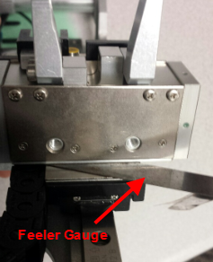

Installing Gripper Sensor (Round from Rectangular)
-
Install Sensors - Two Piece Gripper Mounting Block
Note:
- The gripper mounting block was switched from a one piece design to a 2 piece design in November 2017 on DxI serial numbers 606147 and 901603 and above.
- Shims are not used on the 2 piece design because the gripper is mounted to the vertical surface of the block.
- The 2 piece design allows the gripper to be serviced without removing the Z carriage for access.
- All sensor mounting pictures are shown from the bottom view.
-
Attach the gripper assembly to the z carriage mount using 3 screws. Push the block to the top of the linear slide to reveal all screw holes.

-
Install Sensors - One Piece Gripper Mounting Block
-
Attach the gripper and shims (if needed) to the gripper mounting block (two metric screws) and verify that gripper is square to the mounting block and is securely fastened.
- Use a feeler gauge between the Z carriage and gripper to confirm the gripper is mounted square on the block.

- Tighten the 2 gripper mounting screws to secure the gripper to the mounting block.
Caution: The mounting screws are torqued to 20 inch pounds in manufacturing. Do not over tighten screws. Over tightened screws can interfere with gripper function.
- Use a feeler gauge between the Z carriage and gripper to confirm the gripper is mounted square on the block.
-
Attach the gripper and shims (if needed) to the gripper mounting block (two metric screws) and verify that gripper is square to the mounting block and is securely fastened.
-
Route sensor cables and connect to the PCB.
-
Attach the sensors to the connectors on the reagent storage interface PCB.

- J15 left Gripper Sensor
- J16 right Gripper Sensor
-
Attach the sensors to the connectors on the reagent storage interface PCB.